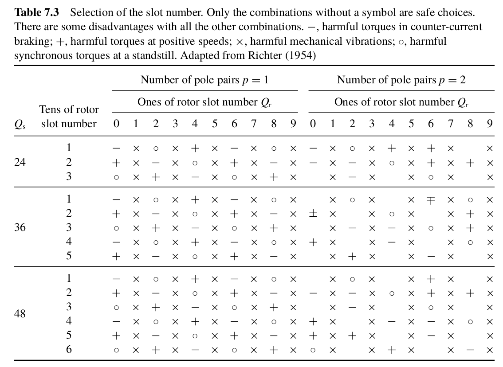
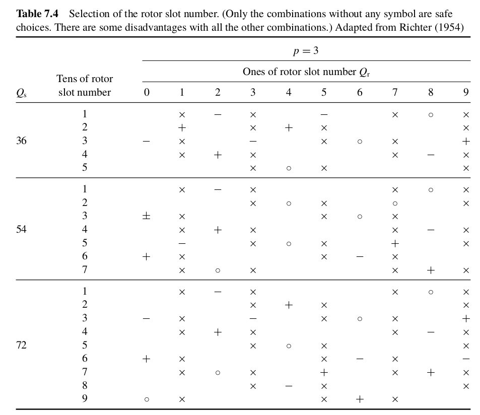
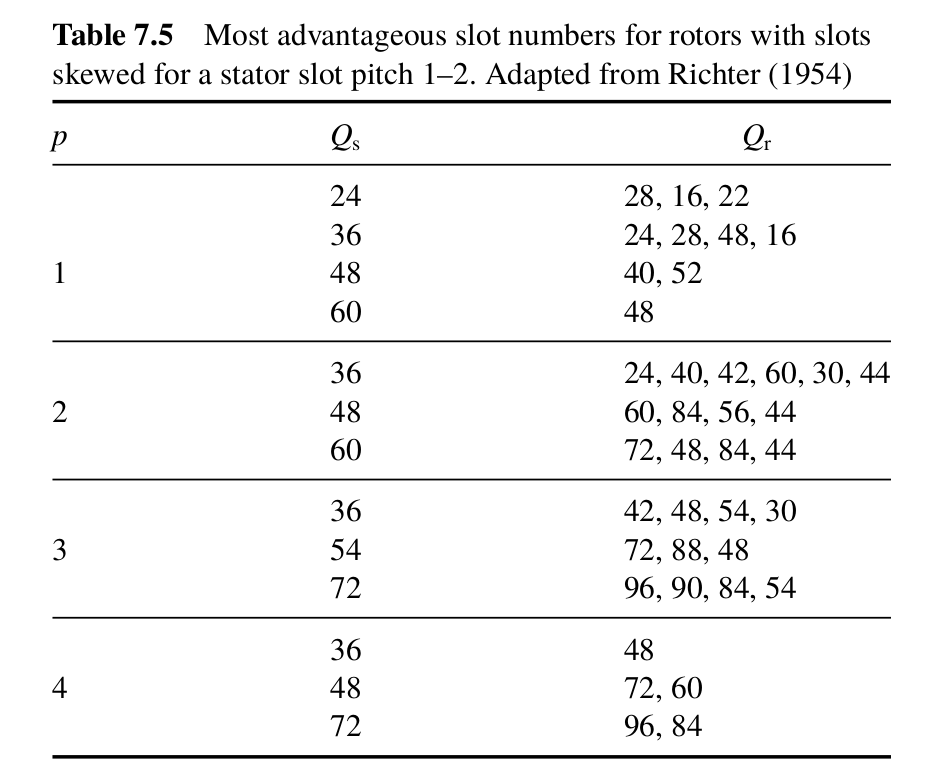

class: center, middle # EE-564 Design of Electrical Machines ## Ozan Keysan [ozan.keysan.me](http://ozan.keysan.me) Office: C-113 <span class="meta">•</span> Tel: 210 7586 --- # Suitable Airgap -- ### There is not a definite answer -- ### \\(\delta = 0.2 + 0.01 P^{0.4} \\)mm when p=1 -- ### \\(\delta = 0.18 + 0.006 P^{0.4} \\)mm when p > 1 -- ### Smallest airgap is 0.2 mm --- # Suitable Airgap ### For heavy duty motors increase the gap by 60 %. -- ### For converter driven motors airgap can be increased by 60 % to reduce rotor surface losses. -- ### For high speed machines increase airgap (eqn. 6.25 of the textbook) -- ### For very large diameter machines airgap is equal to D/1000. --- # Mechanical Constraints ## Tip Speed ### What is the rotational speed of a machine with 0.5m diameter rotor, to reach the tip speed reach to the speed of sound (1 Mach)? -- ### Max allowable tip speed: 75m/s for high-strength non-magnetic alloy sleeves, and 100 m/s for carbon-fiber sleeves Reading: Section 6.1 of textbook --- # Mechanical Loadability -- ### Rotor material should withstand centrifugal forces (especially at high speeds). -- ## Centrifugal Stress: ## \\(\sigma\_{mech} = C' \rho r\_r^2 \Omega^2 \\) ### \\(\Omega\\): Mechanical speed in rad/s ### \\(\rho\\): Density of the material --- ## Centrifugal Stress: ## \\(\sigma\_{mech} = C' \rho r\_r^2 \Omega^2 \\) -- #### \\(C'= 1\\) for a thin cylinder -- #### \\(C'= (3+v)/8\\) for a smooth homogenous cylinder -- #### \\(C'= (3+v)/4\\) for a cylinder with a small bore -- ### \\( v \\): Poisson's ratio -- ### [Poisson's ratio](https://www.youtube.com/watch?v=hBnzrBhnzVo), [deflection of a golf ball](https://www.youtube.com/watch?v=aMqM13EUSKw), [deflection of a face, 2:15](https://www.youtube.com/watch?v=On1CsbTwlDs) -- ### Poisson Ratios of metals: Aluminium=0.34, Steel=0.29, Copper=0.34 --- # Ex. 6.3: --- # Other Mechanical Constraints ### Bending Modes <img src="https://qph.fs.quoracdn.net/main-qimg-9c0fb36366b6b11967494f294b47c246" alt="Drawing" style="width:450px;"/> --- # Dynamics of Mechanical Systems: Resonance <img src="https://upload.wikimedia.org/wikipedia/commons/thumb/7/72/Resonant_frequency_amplitude.svg/524px-Resonant_frequency_amplitude.svg.png" alt="Drawing" style="width:300px;"/> ### [Transfer function and mathematical modelling](https://www.slideshare.net/vishalgohel12195/transfer-function-and-mathematical-modeling) -- ### [Tacoma Bridge](https://www.youtube.com/watch?v=lXyG68_caV4) ### [Forced vibration-1](https://www.youtube.com/watch?v=OaXSmPgl1os), [Resonant Freq.](https://www.youtube.com/watch?v=LV_UuzEznHs) ### [Torsional Resonance](https://www.youtube.com/watch?v=JLY-yQOpL20) --- # Resonant Modes ### [Cantilever Vibration](https://www.youtube.com/watch?v=lKT3wBIUFhA) ### [Resonant Modes](https://www.youtube.com/watch?v=uWoiMMLIvco) ### [Modal Shapes](https://www.youtube.com/watch?v=kvG7OrjBirI) ### [Modal Shapes](https://www.youtube.com/watch?v=d3U_m-4XOtg) --- # Critical Speeds ### The rotational speed should be below the critical speed (preferably with a safety factor) -- ### Usually the limiting factor for very high-speed machines: -- <img src="./images/ee564/critical_speed.png" alt="Drawing" style="width: 800px;"/> --- # Ex 6.5 --- # Aspect Ratio -- ## \\(\chi = \dfrac{L'}{D}\\) --- # Typical Aspect Ratios -- ## Asynchronous Machines: ## \\(\chi \approx \dfrac{\pi}{2p} \sqrt[3]{p}\\\) -- ## Synchronous Machines: ## \\(\chi \approx \dfrac{\pi}{4p} \sqrt{p}\\\) -- --- # Define \\(D_i\\) and \\(L\\) -- ## Usually \\(0.5 < D_i/L < 2.5\\) -- ## Small diameter for high-speed or servo-type motors, why? -- ### Small inertia, -- ### Low tip speed! -- ### Bending Modes --- --- # How to define Outer Diameter \\(D_o\\)? -- <img src="./images/varying_number_of_poles.png" alt="Drawing" style="width: 800px;"/> --- # How to define \\(D_o\\)? -- <style type="text/css"> .tg {border-collapse:collapse;border-spacing:0;border-color:#bbb;margin:0px auto;} .tg td{font-family:Arial, sans-serif;font-size:32px;padding:10px 5px;border-style:solid;border-width:1px;overflow:hidden;word-break:normal;border-color:#bbb;color:#594F4F;background-color:#E0FFEB;} .tg th{font-family:Arial, sans-serif;font-size:32px;font-weight:normal;padding:10px 5px;border-style:solid;border-width:1px;overflow:hidden;word-break:normal;border-color:#bbb;color:#493F3F;background-color:#9DE0AD;} </style> <table class="tg"> <tr> <th class="tg-031e">N Poles</th> <th class="tg-031e">2</th> <th class="tg-031e">4</th> <th class="tg-031e">6</th> <th class="tg-031e">8</th> <th class="tg-031e">10</th> <th class="tg-szh5">12</th> </tr> <tr> <td class="tg-031e">Do/Di</td> <td class="tg-031e">2 <br></td> <td class="tg-031e">1.88</td> <td class="tg-031e">1.78</td> <td class="tg-031e">1.66</td> <td class="tg-031e">1.54</td> <td class="tg-031e">1.43</td> </tr> </table> Source: T.Miller - Electric Machine Design Course, Lecture-5, Slide4 --- # Typical Flux Density Values <img src="./images/typical_magnetic_loading.png" alt="Drawing" style="width: 750px;"/> Source: Traditional Design of Electrical Machines, Slide-12 --- # Stator Slot Pitch: -- - ## Induction Machines and small PMSMs: 7-45 mm -- - ## Synchronous Machines and large PMSMs: 14-75 mm -- - ## DC Machines: 10-30 mm --- # Example: ### Select suitable stator windings for the 30 kW, 4-pole machine --- # Stator Slot Types: - ### Open Slots: Constant width, easy repair and assembly -- - ### Semiclosed Slots: Difficult to assembly but better magnetic characteristics -- - ### Tapered Slots: Varying width (constant tooth width) --- # Production of Electric Machines ### [TES Generators and Motors](https://www.youtube.com/watch?v=5Mu42TzHy8M) ### [Induction Motors: Overhauling a Motor](https://www.youtube.com/watch?v=yPvYd03cKJU) ### [Rewinding a Large Motor](https://www.youtube.com/watch?v=_65mXQ-GNVM) ### [Automatic Coil Insertion](https://www.youtube.com/watch?v=Kih3hyl8CUg) ### [E-propulsion System](https://www.youtube.com/watch?v=d5cEIGDg2Co) ### [BMW i-8](https://youtu.be/w_p8Y1YrrfI?t=1m14s) --- # Selection of number of stator slots -- ## Advantages of Low number of slots: - ### Reduced manufacturing cost - ### Less space lost due to insulation and slot opening -- ## Disadvantages of low number of slots - ### Increased leakage inductance - ### Reduced breakdown torque - ### Larger MMF harmonics --- # Selection of number of stator slots ## Advantages of High number of slots: - ### Reduced tooth pulsation - ### Higher overload capacity - ### Better Cooling -- ## Disadvantages of high number of slots - ### Increased magnetizing current - ### Poor Cooling - ### Difficult manufacturing --- # Number of Slots vs Winding Factor <img src="./images/fundamental_winding_factors_for_different_slot_numbers.png" alt="Drawing" style="width: 850px;"/> --- # Selection of Number of Slots  --- # Selection of Number of Slots  --- # Selection of Number of Slots  --- # Selection of Number of Slots ## Combinations to avoid -- ## Causes noise and vibrations ## \\(Q_s - Q_r = \pm 2\\) ## \\(Q_s - Q_r = \pm (P \pm 1)\\) ## \\(Q_s - Q_r = \pm (P \pm 1)\\) ### \\(Q_s\\) Stator slot number, \\(Q_s\\) Rotor slot number, P pole number --- # Selection of Number of Slots ## Combinations to avoid ## Cusps in torque speed curve -- ## \\(Q_s - Q_r = \pm P\\) ## \\(Q_s - Q_r = - 2 P\\) ## \\(Q_s - Q_r = - 5 P\\) ### \\(Q_s\\) Stator slot number, \\(Q_s\\) Rotor slot number, P pole number --- # Selection of Number of Slots ## Combinations to avoid ## Cogging Problem -- ## \\(Q_s - Q_r = 0 \\) ## \\(Q_s - Q_r = \pm m P\\) ### Preferred combinations in smaller sizes have \\(Q_s - Q_r = \pm 2P \\) with 1 rotor slot skew to reduce cusps and cogging. --- ## Common Combinations \\(Q_s, Q_r\\) ## 2 Pole: 36/28, 48/38, 54/46, 60/52 -- ## 4 Pole: 48/40, 48/56, 60/44, 60/76, 72/58 -- ## 6 Pole: 54/42, 54/66, 72/88, 72/54, 72/84 -- ## 8 Pole: 54/70, 72/58, 72/88 -- ## 10 Pole: 72/88, 72/92 -- ## 12 Pole: 72/92 --- # Selection of Phases - Poles Source: T.Miller Electric Machine Design Cource, Lecture 10-12 --- ## You can download this presentation from: [keysan.me/ee564](http://keysan.me/ee564)